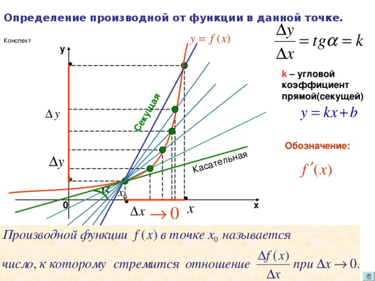

Для успешного решения задач такого типа необходимо знание такого понятия как производная, а также умение выполнять действия с функциями
1. На рисунке изображен график y=f'(x) – производной функции f(x), определенной на интервале (–6; 5). Найдите точку экстремума функции f(x), принадлежащую отрезку [–5; 4].
2. Материальная точка М начинает движение из точки А и движется по прямой на протяжении 12 секунд. График показывает, как менялось расстояние от точки А до точки М со временем. На оси абсцисс откладывается время t в секундах, на оси ординат — расстояние s в метрах. Определите, сколько раз за время движения скорость точки М обращалась в ноль (начало и конец движения не учитывайте).
3. Найдите тангенс угла наклона касательной проведенной к графику функции y=2x–x в его точке с абсциссой x0=–2.